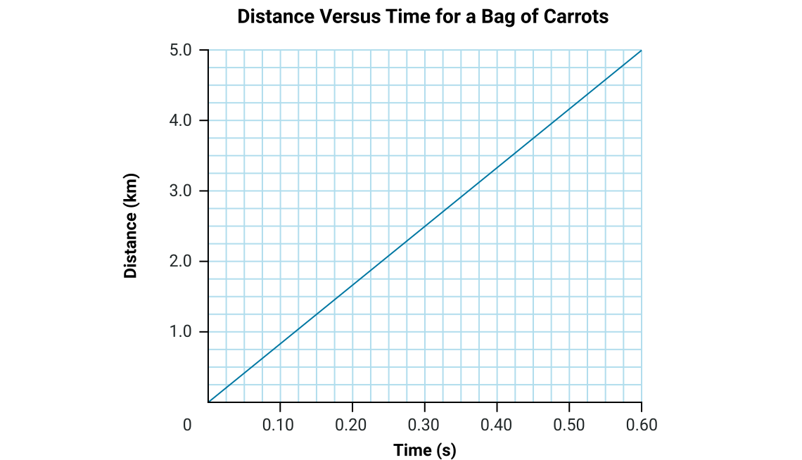
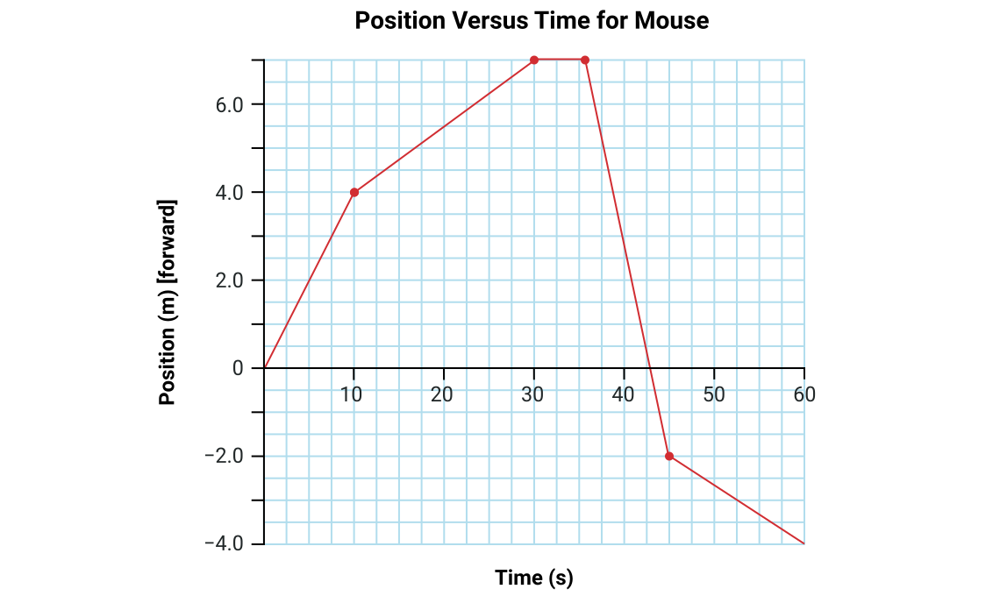
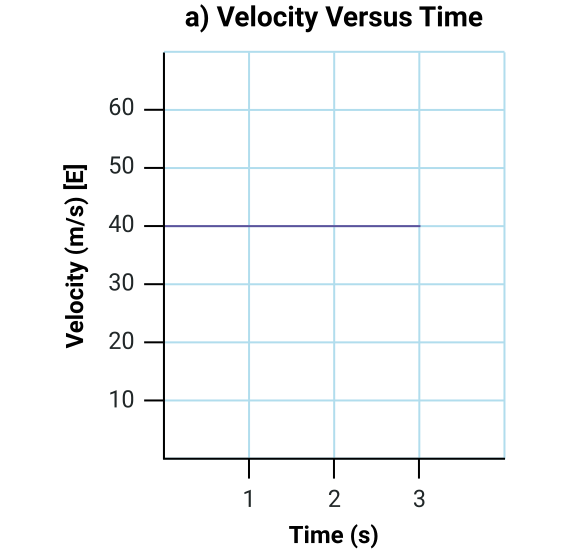
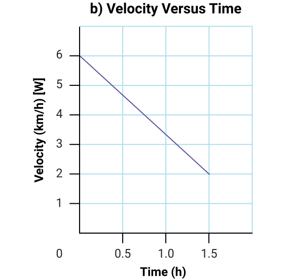
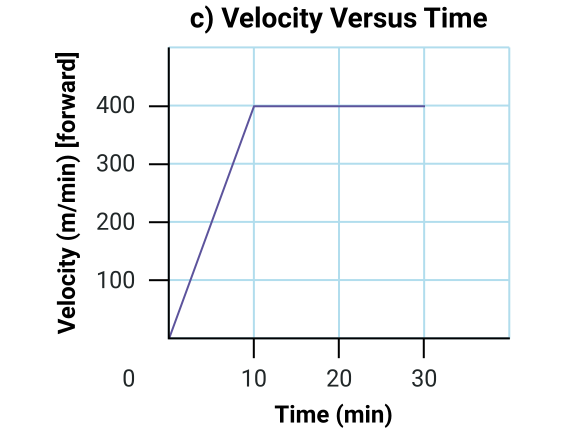

되돌아보기
새로운 주제를 탐구하고 배울 때, 잠시 멈추고 학습을 되돌아보는 것이 중요합니다. 이를 통해 기존 지식을 강화하고, 잘못된 이해를 바로잡으며, 앞으로의 학습을 준비할 수 있습니다.
이 학습 활동의 목적은 운동학(kinematics)을 되돌아보고, 이 과정의 두 번째 과제를 준비하는 것입니다. 운동학에 대한 과제는 이 학습 활동 이후에 나옵니다.
노트
이것은 자기 평가로, 다음을 도와줍니다:
- 자신의 학습 결과를 평가하고 검토한다
- 학습에서 현재 어디에 있는지, 어디로 가야 하는지, 그리고 어떻게 가장 잘 도달할 수 있는지 파악한다
이 자기 평가에는 다섯 가지 과제가 있습니다. 다음의 모든 문제에 대한 답을 노트에 작성하세요. 예시 답안과 비교하여 자신의 이해도를 확인하세요.

과제 1: 평균 속력(average speed)
- 트럭이 2.50시간 동안 263 km를 주행합니다. 트럭의 평균 속력을 km/h와 m/s로
구하세요.
- km/h로 답을 구하세요.
- m/s로 답을 구하세요.
방정식을 이용한 계산이 포함된 모든 문제에서, GUESS 형식으로 풀이를 제시하는 것이 기대됩니다. 과제 제출 시 이 구조를 반드시 적용하세요.
주어진 값:
미지수:
, km/h와 m/s 모두로 구하세요.
방정식:
풀이:
대입을 보여주세요:
그리고 정밀도를 위해 추가 소수점이 포함된 계산 결과:
미지수 중 하나를 구했지만, 나머지를 구하려면 단위를 변환해야 합니다.
결론:
트럭의 평균 속력은 105 km/h, 또는 29.2 m/s입니다.
(결론에는 유효 숫자 규칙에 따라 반올림된 값이 포함되어 있습니다. 이 경우, 거리와 시간 모두 세 개의 유효 숫자를 가지므로, 보고된 답도 세 개의 유효 숫자를 사용합니다.)과제 2: 운동 그래프
1. 다음 그래프에 나타난 컨베이어 벨트 위 당근 봉지의 속력(speed)을 계산하세요.

주어진 값:
그래프에서 임의의 두 점을 선택해야 합니다. 두 점이 멀리 떨어져 있을수록 결과가 더 정확합니다. 여기서는 다음 점들을 선택했지만, 여러분은 다른 점을 선택할 수 있습니다. d와 t 대신 x와 y 변수를 사용할 수도 있습니다.
미지수:
방정식:
풀이:
결론:
봉지의 속력은 8.3 m/s입니다.
(그래프의 두 축 모두 최소 2자리 유효 숫자로 읽을 수 있으므로, 응답에 2자리 유효 숫자를 사용할 수 있습니다.)
선택한 점과 격자 위에 정확히 있지 않은 점의 위치를 어떻게 추정했는지에 따라 8.2에서 8.7 m/s 사이의 값을 구했을 수 있습니다. 선택한 점이 합리적이고 풀이에서 제대로 표현되었다면, 이 범위의 어떤 값이든 정당화될 수 있습니다.
2. 다음 그래프는 쥐의 운동을 나타냅니다. 그래프를 분석하세요.

a) 쥐의 총 이동 거리(total distance)는 얼마입니까?
이 문제는 GUESS 구조를 작성하여 풀 수 있지만, 반드시 그럴 필요는 없습니다. 변수를 구하는 것이 아니므로, 사고 과정을 설명하면 됩니다. 적절한 풀이는 다음과 같습니다:
총 이동 거리를 구하려면, 여행의 각 구간에서 이동한 거리를 구하고 그 값들을 더합니다. 각 구간의 거리는 두 점 사이의 위치 차이의 절댓값입니다.
총 이동 거리는 18 미터입니다.
b) 쥐의 평균 속력은 얼마입니까?
주어진 값:
미지수:
방정식:
풀이:
결론:
쥐의 평균 속력은 0.3 m/s입니다.
c) 쥐의 평균 속도(velocity)는 얼마입니까?
주어진 값:
[앞으로]를 양의 방향으로 설정합니다. (이 문제는 [뒤로]를 양의 방향으로 설정하여 풀 수도 있습니다.)
미지수:
방정식:
풀이:
속도가 음수이므로, 방향은 [뒤로]입니다.
결론:
쥐의 평균 속도는 0.067 m/s [뒤로]입니다. (답을 -0.067 m/s [앞으로]로 표현할 수도 있습니다.)
과제 3: 속도-시간 그래프
1. 다음 그래프로 나타낸 변위(displacement)를 구하세요.
a) 0초에서 3초까지 물체의 변위는 얼마입니까?

변위를 구하려면, 그래프 아래의 넓이를 구합니다:
이 그래프 아래의 넓이는 직사각형이므로, 가로와 세로를 곱합니다.
2. 다음 그래프로 나타낸 변위를 구하세요.
a) 0시간에서 1.5시간까지 물체의 변위는 얼마입니까?

변위를 구하려면, 속도-시간 그래프 아래의 넓이를 구합니다. 이 그래프의 모양은 직사각형 위에 삼각형이 있는 것으로 볼 수 있습니다.
3. 다음 그래프로 나타낸 변위를 구하세요.
a) 0분에서 30분까지 물체의 변위는 얼마입니까?

변위를 구하려면, 속도-시간 그래프 아래의 넓이를 구합니다. 이 그래프의 모양은 왼쪽의 삼각형과 오른쪽의 직사각형으로 볼 수 있습니다.
과제 4: 포물선 운동(projectile motion)
1. 수박을 다리 위에서 3.2 m/s로 위쪽으로 던집니다. 수박은 9.8 m/s2 [아래]의 중력 가속도를 받습니다.
a) 2.0초 후 수박의 속도는 얼마입니까?
주어진 값:
[위]를 양의 방향으로 설정합니다.
미지수:
방정식:
변위가 없는 방정식을 선택합니다.
풀이:
이 값은 음수이므로, 방향은 [아래]입니다.
결론:
2.0초 후 수박의 속도는 16 m/s [아래]입니다.
b) 2.0초 후 다리를 기준으로 한 변위는 얼마입니까?
주어진 값:
[위]를 양의 방향으로 설정합니다.
미지수:
방정식:
나중 속도가 없는 방정식을 선택합니다.
풀이:
이 값은 음수이므로, 방향은 [아래]입니다.
결론:
변위는 13 m [다리 아래] (또는 [아래])입니다.
과제 5: 포물선 운동
1. 개시 킥오프에서, 축구공이 지면에 대해 40.0° 각도로 35.0 m/s의 속력으로 찼습니다.
a) 공이 발사될 때 초기 수직 및 수평 속도 성분을 구하세요.
주어진 값:
[앞으로]와 [위]를 양의 방향으로 설정합니다.
미지수:
방정식:
풀이:
결론:
초기 수평 성분은 26.8 m/s [앞으로]이고, 초기 수직 성분은 22.5 m/s [위]입니다.
b) 축구공이 지면에 닿았을 때, 수평으로 얼마나 이동했습니까?
주어진 값:
[앞으로]와 [위]를 양의 방향으로 설정합니다.
미지수:
방정식:
풀이:
수직 방향을 사용하여 시간을 구한 후, 이를 수평 방향에 사용합니다.
결론:
공은 지면에 닿기 전에 123 m [앞으로] 이동합니다.
c) 2.0초 후 축구공은 수평으로 얼마나 이동했습니까?
수평 속도는 일정합니다.
2.0초 후, 공은 54 m를 이동했습니다.
d) 그 시점에서 공은 지면으로부터 얼마나 높이 있습니까?
주어진 값:
미지수:
방정식:
풀이:
결론:
그 시점에서 공은 지면 위 25 m [위]에 있습니다.

노트
피드백
이 과제에서는 자신의 학습 결과를 평가합니다. 평가자로서 루브릭을 통해 피드백을 제공합니다.
루브릭을 사용할 때, 이 과제를 처음 본다면 어떤 의견을 남길지 스스로에게 물어보세요. 강점은 무엇입니까? 개선이 필요한 부분은 무엇입니까? 이와 같은 과제를 다시 제출하기 전에 어떤 단계를 거쳐야 합니까?
이 루브릭 (새 창에서 열림)을 검토하세요. 각 행에서 과제를 가장 잘 설명하는 문구를 결정하세요.
성찰
잠시 시간을 내어 노트에 다음 성찰 질문에 답하세요.
- 연습 문제의 예시 답안을 검토한 후, 더 잘 이해해야 할 개념은 무엇입니까?
- 연습 문제의 예시 답안을 검토한 후, 잘 이해하고 있다고 느끼는 개념은 무엇입니까?
- 지금까지의 학습 활동에서 학습자로서 자신이 한 일을 돌아보세요. 2~3 문장으로 잘한 점을 설명하세요.
- 독립적인 학습자로서의 강점은 무엇입니까? 집중하기 위해 무엇을 했습니까?
- 도움을 받기 위해 어떤 자료를 참고했습니까?
- 개선해야 할 부분은 무엇입니까? 더 나은 학습자/학생이 되기 위해 어떤 단계를 거칠 수 있습니까?
학습 활동 2.4 평가
준비가 되면 다음 페이지로 이동하여 2.4 평가새 창에서 열림.에 대해 자세히 알아보세요.
자기 점검 퀴즈
이해도를 확인하세요!
다음 자기 점검 퀴즈를 완료하여 학습에서 현재 어디에 있는지와 집중해야 할 부분을 파악하세요.
이 퀴즈는 피드백 목적으로만 사용되며, 성적에 포함되지 않습니다. 이 퀴즈에 대한 시도 횟수는 무제한입니다. 시간을 들여 최선을 다하고, 제공된 피드백을 성찰하세요.
퀴즈를 눌러 이 도구에 접근하세요.